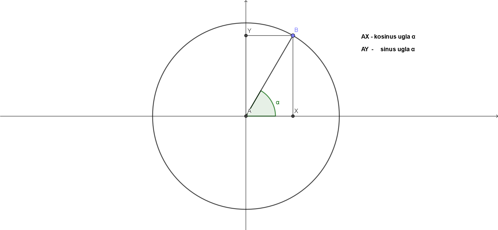
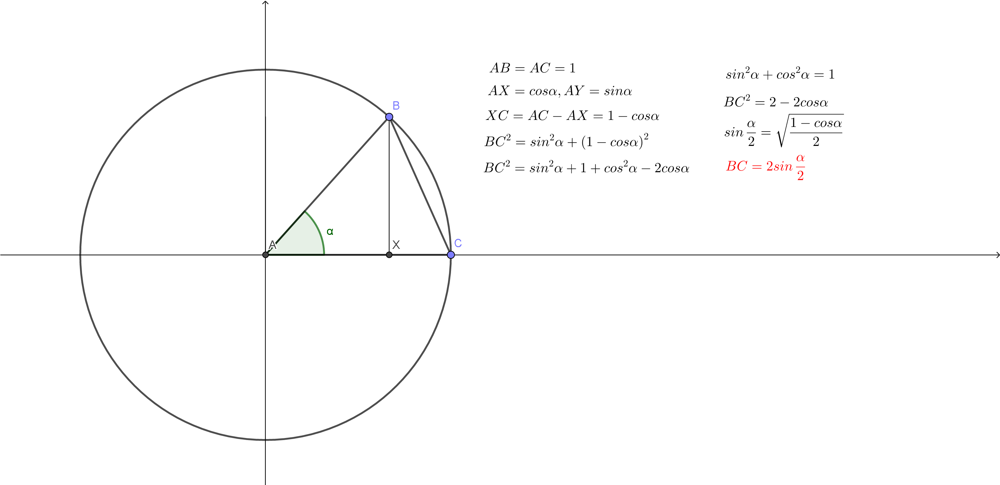

Sada cemo definisati sta su to sinus i kosinus ugla.
Pogledajmo sliku ispod:
Krug ima stranicu duzine 1.
Tacka A je centar kruga, a tacka B se nalazi na njemu.
Tacka X je projekcija iz B na x osu, a tacka Y projekcija na y osu.
Duz AX predstavlja kosinus ugla α, a duz AY predstavlja sinus ugla α.
Na animaciji ispod mozete pomerati tacku B po kruznici i prikazace vam se sinus i kosinus za ugao α.
Sada ovo mozemo da primenimo na problem sa tetivom, ali da ga ovog puta resimo pomocu trigonometrije:
Trazimo duzinu tetive BC:
Ovde je iskoriscen identitet za polovinu ugla, ali se moze izracunati i bez njega.
Preko ovog primera, Grci su resili ovaj problem, a ujedno i prvi put upotrebili izraze sinus i kosinus
Na sledecoj strani videcemo jos neke prikaze trigonometrijskih funkcija.